- 

Jenny Carr came to Australia from Scotland in the early 70's and instantly became and intergral part of the Townsville music scene as a pianist and instrumental music teacher.< /p>
In 1998 when the decision was made to establish a community orchestra, Jenny worked as librarian, performer and for many years as Manager. In Conjuntion with Donna McMahon and Susan Linge (from the Townsville Civic Theatre), they arranged a series of concerts for the emerging orchestra. She also played with the orchestra when a pianist was needed. As Manager, she was involed in all aspects of handling the Orchestras music and checking attendances. In later years Jenny worked as Adjudicator's Assistant for the Australian Concherto and Vocal Competition.